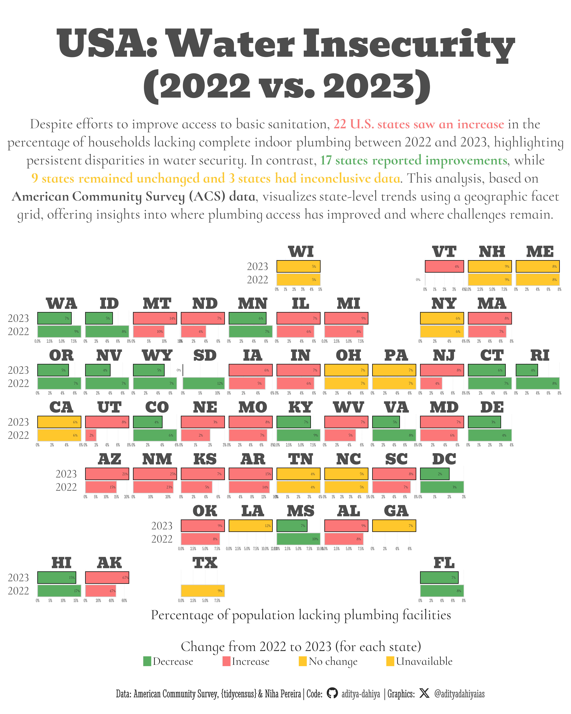

Water Insecurity Across U.S. States: 2022 vs. 2023
This faceted graph, arranged in a geo-faceted layout, visually compares the percentage of households without plumbing across all 50 U.S. states, highlighting year-over-year changes from 2022 to 2023.
#TidyTuesday
{ggpattern}
{magick}
Images
Author
Aditya Dahiya
Published
February 1, 2025
About the Data
The Water Insecurity dataset for this week’s TidyTuesday is sourced from the U.S. Census Bureau’s American Community Survey (ACS) and focuses on households lacking complete indoor plumbing. The dataset, featured in the article Mapping water insecurity in R with tidycensus, explores how social vulnerability indicators such as demographic characteristics, socioeconomic status, and living conditions contribute to disparities in water access across the U.S. The data is available for both 2022 and 2023, allowing comparisons of trends over time. It can be accessed using the tidytuesdayR package or downloaded directly from GitHub. The dataset includes variables such as county-level geographic boundaries, total population, and percentage of households lacking plumbing, with spatial data formatted as sfc_MULTIPOLYGON objects. The dataset is curated by Niha Pereira and encourages data exploration, visualization, and analysis using packages like tidycensus and ggplot2. Participants are invited to analyze regional disparities in plumbing access and contribute their findings via the #TidyTuesday community.

Figure 1: This graphic presents a faceted comparison of indoor plumbing access across all 50 U.S. states, arranged in a grid that mirrors their geographic locations. Each facet contains two horizontal bar charts, where the x-axis represents the percentage of households lacking plumbing, and the y-axis differentiates between 2022 (lower bar) and 2023 (upper bar). This layout allows for a clear state-by-state comparison of changes in plumbing access over time, illustrating where conditions have improved, worsened, or remained unchanged.
How I made this graphic?
Loading required libraries, data import & creating custom functions.
Code
# Data Import and Wrangling Toolslibrary(tidyverse) # All things tidy# Final plot toolslibrary(scales) # Nice Scales for ggplot2library(fontawesome) # Icons display in ggplot2library(ggtext) # Markdown text support for ggplot2library(showtext) # Display fonts in ggplot2library(colorspace) # Lighten and Darken colourslibrary(geofacet) # Faceted graphswater_insecurity_2022 <- readr::read_csv('https://raw.githubusercontent.com/rfordatascience/tidytuesday/main/data/2025/2025-01-28/water_insecurity_2022.csv')water_insecurity_2023 <- readr::read_csv('https://raw.githubusercontent.com/rfordatascience/tidytuesday/main/data/2025/2025-01-28/water_insecurity_2023.csv')# The geometry columns are saved as text with the code to reproduce them.water_insecurity_2022 <- water_insecurity_2022 |> dplyr::mutate(geometry = purrr::map( geometry, \(geo) {eval(parse(text = geo))} ) )water_insecurity_2023 <- water_insecurity_2023 |> dplyr::mutate(geometry = purrr::map(geometry, \(geo) {eval(parse(text = geo)) } ) )
Visualization Parameters
Code
# Font for titlesfont_add_google("Bevan",family ="title_font") # Font for the captionfont_add_google("Stint Ultra Condensed",family ="caption_font") # Font for plot textfont_add_google("Cormorant Infant",family ="body_font") showtext_auto()# A base Colourbg_col <-"white"seecolor::print_color(bg_col)# Colour for highlighted texttext_hil <-"grey30"seecolor::print_color(text_hil)# Colour for the texttext_col <-"grey15"seecolor::print_color(text_col)# Define Base Text Sizebts <-90# Caption stuff for the plotsysfonts::font_add(family ="Font Awesome 6 Brands",regular = here::here("docs", "Font Awesome 6 Brands-Regular-400.otf"))github <-""github_username <-"aditya-dahiya"xtwitter <-""xtwitter_username <-"@adityadahiyaias"social_caption_1 <- glue::glue("<span style='font-family:\"Font Awesome 6 Brands\";'>{github};</span> <span style='color: {text_hil}'>{github_username} </span>")social_caption_2 <- glue::glue("<span style='font-family:\"Font Awesome 6 Brands\";'>{xtwitter};</span> <span style='color: {text_hil}'>{xtwitter_username}</span>")plot_caption <-paste0("**Data:** American Community Survey, {tidycensus} & Niha Pereira", " | **Code:** ", social_caption_1, " | **Graphics:** ", social_caption_2 )rm(github, github_username, xtwitter, xtwitter_username, social_caption_1, social_caption_2)# Add text to plot-------------------------------------------------plot_title <-"USA: Water Insecurity\n(2022 vs. 2023)"plot_subtitle <- glue::glue("Despite efforts to improve access to basic sanitation, <b style='color:#FC7878FF'>22 U.S. states saw an increase</b> in the<br>percentage of households lacking complete indoor plumbing between 2022 and 2023, highlighting<br>persistent disparities in water security. In contrast, <b style='color:#5AAE61FF'>17 states reported improvements</b>, while<br><b style='color:#FFC72CFF'>9 states remained unchanged and 3 states had inconclusive data</b>. This analysis, based on<br>**American Community Survey (ACS) data**, visualizes state-level trends using a geographic facet<br>grid, offering insights into where plumbing access has improved and where challenges remain.")
# Saving a thumbnaillibrary(magick)# Saving a thumbnail for the webpageimage_read(here::here("data_vizs", "tidy_us_water_insecurity.png")) |>image_resize(geometry ="x400") |>image_write( here::here("data_vizs", "thumbnails", "tidy_us_water_insecurity.png" ) )
Session Info
Code
# Data Import and Wrangling Toolslibrary(tidyverse) # All things tidy# Final plot toolslibrary(scales) # Nice Scales for ggplot2library(fontawesome) # Icons display in ggplot2library(ggtext) # Markdown text support for ggplot2library(showtext) # Display fonts in ggplot2library(colorspace) # Lighten and Darken colourslibrary(geofacet) # Faceted graphssessioninfo::session_info()$packages |>as_tibble() |>select(package, version = loadedversion, date, source) |>arrange(package) |> janitor::clean_names(case ="title" ) |> gt::gt() |> gt::opt_interactive(use_search =TRUE ) |> gtExtras::gt_theme_espn()
Table 1: R Packages and their versions used in the creation of this page and graphics